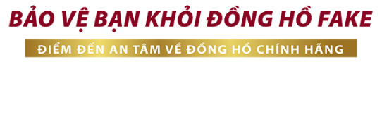

ĐỒNG HỒ WATCHTINE
WatchTime ra đời với một tinh thần thay đổi ngành đồng hồ Việt Nam và mục tiêu cao cả: tư vấn lựa chọn và phân phối Đồng Hồ Chính Hãng ở mức giá hợp lý và vừa phải nhất cho khách hàng, ngoài ra cũng tiên phong trong cuộc chiến bài trừ đồng hồ Fake khỏi thị trường Việt Nam
VÌ SAO KHÁCH HÀNG TIN TƯỞNG VÀ LỰA CHỌN WATCH TIME
Giới thiệu WATCHTIME
Giới thiệu về câu chuyện của WatchTime, lịch sử ra đời và ra đời với mục đích gì?
WatchTime ra đời với một tinh thần thay đổi ngành đồng hồ Việt Nam và mục tiêu cao cả: tư vấn lựa chọn và phân phối ĐỒNG HỒ CHÍNH HÃNG ở mức giá hợp lý và vừa phải nhất cho khách hàng, ngoài ra cũng tiên phong trong cuộc chiến bài trừ đồng hồ Fake (Replica) khỏi thị trường Việt Nam.
Bất cứ ý tưởng nào cũng bắt nguồn từ một vấn đề. Vấn đề của chúng ta rất đơn giản: đó là nhận thức của người tiêu dùng về đồng hồ chính hãng, nhắc tới đồng hồ chính hãng là nhắc tới hàng xa xỉ, không đủ tiền mua. Trong khi họ nghĩ rằng đồng hồ Fake giá vừa phải lại chất lượng "dùng được", hay đa phần muốn mua đồng hồ chính hãng nhưng không biết cách phân biệt đồng hồ chính hãng như thế nào và không biết chọn nơi bán nào uy tín.
Tuy nhiên sự thực là: chủ yếu người tiêu dùng đa phần bị các thương gia của giới hàng Fake lừa. Đối với chúng tôi, không bao giờ có thuật ngữ đồng hồ Fake “loại 1”, “loại 2”… không có đồng hồ Fake được lắp máy Nhật hay là hàng “Replica”… Chỉ là những thuật ngữ được bịa ra nhằm lừa người tiêu dùng. Tất cả các mặt hàng đó đều được nhập từ Trung Quốc qua con đường buôn lậu, sử dụng loại máy xi rẻ tiền và hay chết vặt, chất lượng kém, về lâu về dài bạn phải bảo hành rất nhiều và tuổi thọ không được là bao. Trong khi đeo hàng Fake, bạn cũng sẽ mang trong mình tự ti khi đeo “hàng giả, hàng nhái” - một loại hàng bị pháp luật cấm không được tiêu thụ (ở nước ngoài có thể bị bỏ tù nếu kinh doanh và tiêu thụ hàng nhái). Liệu bạn có mất tự tin khi thừa nhận với bạn bè, người thân rằng: Mình đang đeo hàng Fake trên tay?
Ngoài ra, sự thực đồng hồ chính hãng không hề đắt tiền như suy nghĩ của mọi người. Ở một đất nước đang phát triển như Việt Nam, chọn các đồng hồ chính hãng thuộc phân khúc bình dân như của Casio, Orient, Citizen, Seiko, Olympia Star… thì giá rất vừa phải và hợp túi tiền, chỉ bắt đầu từ vài trăm ngàn đến cao hơn như vài triệu, là có hàng loạt lựa chọn rất hợp lý ở cả máy cơ và máy Pin cho tất cả chúng ta muốn sắm một chiếc đồng hồ xịn. Hàng chính hãng lại được nhà phân phối bảo hành theo tiêu chuẩn quốc tế, được sản xuất theo qui trình chuẩn của Nhật, lắp máy Thuỵ Sỹ... nên bạn có thể đeo đến hết đời với chiếc đồng hồ của mình. Ngoài ra, đeo đồng hồ chính hãng, bạn sẽ rất tự tin khoe cho bạn bè thấy chiếc đồng hồ mình mua là hàng chính hãng 100%, chứ không phải hàng giả, hàng nhái.
Vậy tại sao lại phải mua hàng Fake chứ? Chúng tôi thực sự không thể tìm ra được câu trả lời thoả mãn.Chúng tôi nhận thấy rằng ở Việt Nam ở Việt Nam, hàng triệu người vẫn đang đeo đồng hồ Fake trên tay. 90% đeo đồng hồ trên tay là hàng Fake.
Chính vì thế để giải quyết triệt để vấn đề trên, chúng tôi tạo ra WatchTime để tạo ra một cơ sở để các bạn có thể tin tưởng lựa chọn đồng hồ chính hãng ở mức giá vừa phải cũng như để nâng cao nhận thức và tiêu dùng.
Bằng kiến thức của những người trong ngành đồng hồ rất nhiều năm, là những người đam mê đồng hồ chính hãng, chúng tôi rất hiểu rõ nhu cầu của người Việt và sẵn sàng tư vấn miễn phí giúp khách hàng chọn ra những mẫu đồng hồ phù hợp nhất. Ngoài ra với bộ kiến thức: Phân biệt đồng hồ chính hãng mà chúng tôi dày công sưu tầm cùng kết hợp cùng những bài viết thu thập từ chính kiến thức trong ngành đồng hồ của chúng tôi, và cả những người nổi tiếng khác trong ngành. Khi đọc những kiến thức đó, mong muốn đơn giản của chúng tôi là các bạn sẽ không phải bị lừa một lần nữa (đã có quá nhiều trường hợp mất tiền rồi, dù ai cũng hiểu tiền khó kiếm và là công sức lao động của chúng ta, chúng tôi không muốn thấy bạn bị lừa) và lấy lại niềm tin cho ngành đồng hồ Việt Nam, vì một thị trường VN phát triển lành mạnh không còn hàng NHÁI (Replica) phá hoại nữa.
Chúng tôi sẽ cố gắng viết ra những bài có giá trị và cập nhật thông tin mới nhất về đồng hồ ở thị trường Việt Nam, vì vậy nếu bạn đọc các bài ở Watch Time chúng tôi ko sợ các bạn copy bài, mà ngươc lại chúng tôi khuyến khích các bạn hãy copy, hãy share kiến thức này cho mọi người, những ai có nhu cầu, để họ tránh lặp phải vết xe đổ của những người đi trước.
Chúng tôi cảm ơn tất cả những ai đã là khách hàng, những ai là độc giả của WatchTime. Chính các bạn là một phần của công cuộc thay đổi này. Người tiêu dùng cần các bạn, thị trường cần các bạn, và chúng tôi cần các bạn.
Trân trọng cảm ơn!